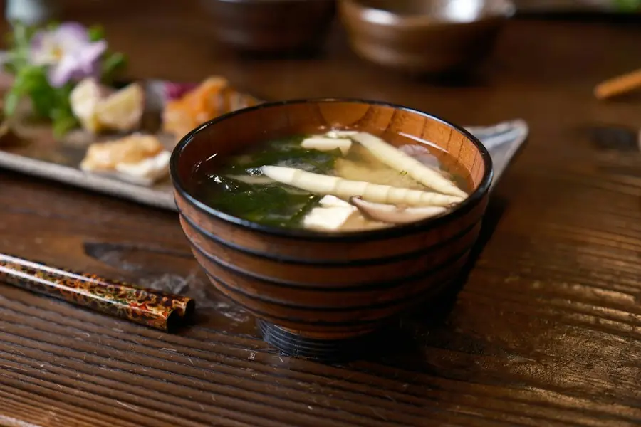
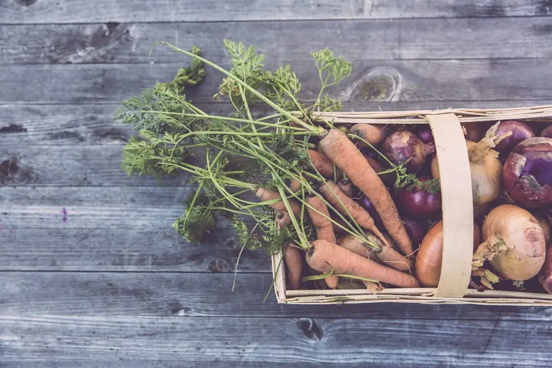
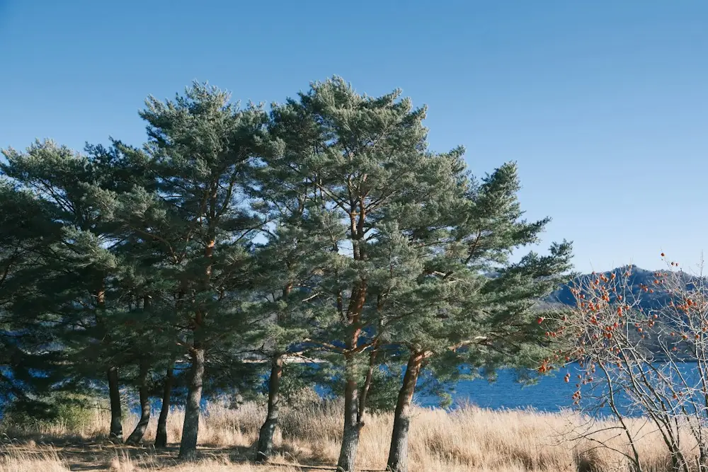

今週の日替わり（例）
今週の黒板
ご飯・味噌汁・小鉢2品・お漬物つき。ご飯の大盛りは無料です。
- 月鶏むね肉の甘酢あん小鉢：ほうれん草のおひたし1,050円
- 火定休日畑の手伝いの日です—
- 水湖魚の南蛮漬け小鉢：かぼちゃの煮物1,050円
- 木豚肉と根菜の味噌炒め小鉢：切り干し大根1,050円
- 金さばの塩焼き小鉢：白和え1,050円
- 土手ごねハンバーグ 和風おろし小鉢：季節野菜の浅漬け1,100円
- 日野菜たっぷり豚汁と焼きおにぎり小鉢：卵焼き980円
※ 畑と市場の具合で、当日かわることがあります。売り切れの日はごめんなさい。



とんぼ舎の3つのこと
毎日食べても、
毎日食べても、
疲れない味に。
開店して12年（架空）。常連さんの「今日は何？」に応えられるよう、続けていることがあります。
野菜
畑から車で10分の野菜
近所の農家さん3軒から、朝とれた野菜を受け取っています。形がふぞろいでも、味のいいものを。
魚
湖の魚を、季節ごとに
湖でとれる小さな魚は、南蛮漬けや天ぷらに。季節によって、海の魚の日もあります。
ご飯
お米は30分ごとに炊きたて
小さな釜で何回かに分けて炊くので、昼の終わりでもふっくら。大盛り無料、おかわりは100円です。
はじめての方へ
数字で見る、とんぼ舎
車で来られる方が多いお店です。お昼の12時台は混みあうので、少しずらすと待たずに座れます。
28席カウンター・テーブル・小上がり
12台無料駐車場（店の前と湖側）
1,050円日替わり定食（税込）
11:00開店。夜は17:30から
いつ来ても
とんぼ舎の一日
11:00
お昼の部、開店
日替わりは40食ほど。13時を過ぎると売り切れの日もあります。
14:30
ひと休み
お弁当の受け渡しは、この時間も店先で行っています。
17:30
夜の部
定食に加えて、一品料理と飲み物も。湖の夕焼けが見える席があります。